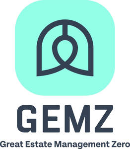
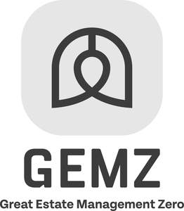

Trade Mark Journal No.2025/018 2 May 2025
UK00004189280 15 April 2025 (9,35,36,42)
Mark 1

Mark 2

- Class 9
- Downloadable electronic publications; electronic bulletins and reports; downloadable electronic publications relating to environmentally-conscious and green innovations for the built environment; downloadable software and mobile applications; computer software to enable access to online database.
- Class 35
- Administrative services relating to referrals for general building contractors; business intermediary services relating to the matching of various professionals with clients; administrative assistance in responding to calls for tenders; information and consultancy in relation to all of the aforesaid.
- Class 36
- Estate management consultancy; estate trust management; property survey, valuation and appraisal services; consultancy concerning financing of energy projects; consultancy on the provision of project grants for environmental projects; valuation relating to the surveying of buildings; preparation of financial reports relating to environmental projects for buildings; investment research and consultancy; fund investment consultation relating to building estates and estate trusts; information and consultancy in relation to all of the aforesaid.
- Class 42
- Software as a Service (SaaS); Software as a Service (SaaS) featuring software platforms for resources, insights, intelligence and information relating to buildings, estate management and the energy efficiency of buildings; Platform as a Service (PaaS); Platform as a service [PaaS] featuring software platforms for resources, insights, intelligence and information relating to buildings, estate management and the energy efficiency of buildings; hosting of digital content; cloud storage for electronic data; database development services; computer services for the analysis of data; technical data analysis services; environmental engineering consultancy; professional consultancy relating to energy efficiency in buildings; environmental surveys; environmental assessment services; environmental testing and inspection services; environmental consultancy services; consultancy services relating to environmental planning; compilation of information relating to environmental conditions; monitoring of events which influence the environment within buildings; measuring the environment within buildings; analysis of the structural behaviour of buildings; recording data relating to energy consumption in buildings; consultancy in the field of energy-saving; professional consultancy relating to energy efficiency in buildings; providing technological information about environmentally-conscious and green innovations- for the built environment; providing scientific information, advice and consultancy relating to net zero emissions; preparation of reports relating to the energy efficiency of buildings and estates; energy auditing; quality auditing; information and consultancy in relation to all of the aforesaid.
Warneford Consulting Limited
Representative: Haseltine Lake Kempner LLP